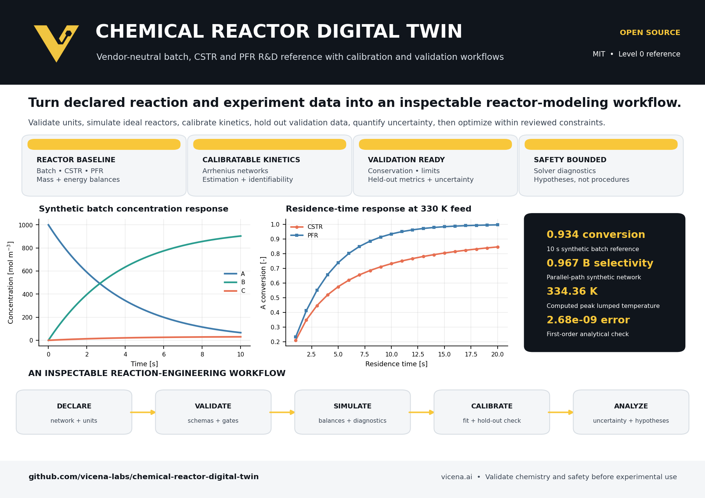

Three ideal reactors
Transparent batch, steady CSTR, and ideal PFR mass and energy balances.
Calibratable kinetics
Arrhenius networks, parameter fitting, covariance, and identifiability diagnostics.
Validation evidence
Conservation, analytical limits, held-out metrics, uncertainty, and solver diagnostics.
Safety bounded
Optimization outputs remain research hypotheses pending experiment and process-safety review.
Start from a completed reference run
git clone https://github.com/vicena-labs/chemical-reactor-digital-twin.git
cd chemical-reactor-digital-twin
python -m pip install -e .
python scripts/run_baseline.py
python -m unittest discover -s tests -v
Scientific status and limitations
This is a Level 0 executable reference using abstract synthetic reactions. A successful solver exit is not chemical validity. The baseline does not resolve nonideal mixing, mass transfer, phase behavior, pressure drop, geometry, scale-dependent heat transfer, relief behavior, or thermal-runaway onset. It is not an operating procedure, process-hazard analysis, or scale-up signoff.
Citation and license
Use CITATION.cff and cite every kinetic, thermodynamic, transport, spectroscopy, and experimental source used in an adaptation. The software is available under the MIT License.
Use with an AI agent
Clone https://github.com/vicena-labs/chemical-reactor-digital-twin.git. Read AGENTS.md, AGENT_PLAYBOOK.md, and the repository skill. Run the tests and baseline before edits. Report what is synthetic, what is validated, and what data are missing. Never infer units, species identities, stoichiometry, phases, properties, acquisition settings, or experimental conditions.Start with Vicena
Open Vicena.ai, provide the GitHub URL, and ask Vicena to verify the repository and scientific validation boundary before adapting it.